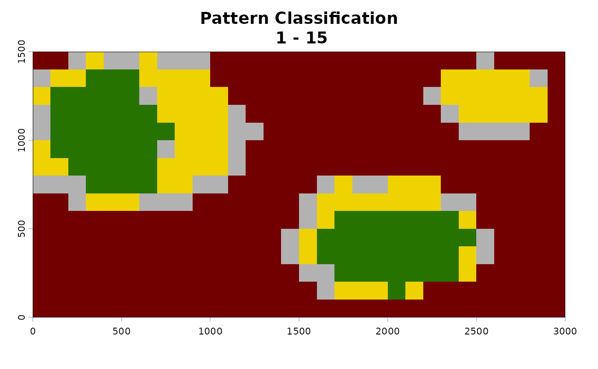
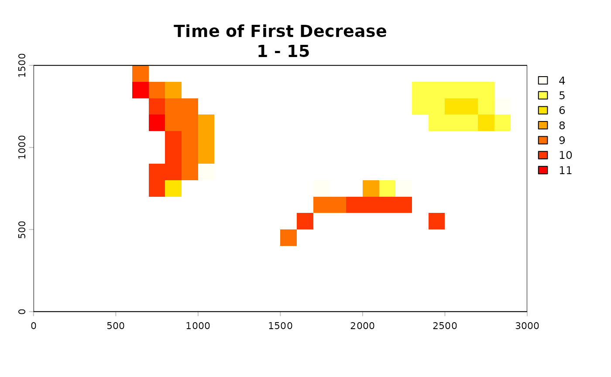

Analyze Temporal Patterns in Binary Raster Time Series
Source:R/analyze_temporal_patterns.R
analyze_temporal_patterns.RdPostprocessing function that applies changepoint detection methods to identify temporal trends in habitat suitability across consecutive predictions. Classifies pixels as stable, increasing in quality, or decreasing in quality, and identifies time periods of significant change.
Usage
analyze_temporal_patterns(binary_stack, summary_raster, time_steps,
fastcpd_params = list(), output_dir = NULL,
n_tiles_x = 1, n_tiles_y = 1, alpha = 0.05,
spatial_autocorrelation = TRUE, verbose = TRUE,
estimate_time = TRUE, overwrite = FALSE)Arguments
- binary_stack
RasterStack, RasterBrick, or character. Stack of binary raster layers across time, or path to directory containing binary rasters. Typically from
summarize_raster_outputs.- summary_raster
RasterLayer. Per-pixel proportion of time periods where a pixel is suitable. From
summarize_raster_outputs.- time_steps
Integer vector. Time labels corresponding to raster layers (same length as number of layers).
- fastcpd_params
List. Named list of parameters passed to fastcpd changepoint detection function. Default is empty list. Supports parameterization from
fastcpd_binomial.- output_dir
Character. Optional. Output directory for pattern rasters. When
NULL(default), rasters are written to temporary files and not saved persistently. Provide a path to write named output files to disk.- n_tiles_x
Integer. Number of tiles in the x direction for tiled processing. Default is
1. Increase to reduce peak memory use for large rasters and prevent crashes.- n_tiles_y
Integer. Number of tiles in the y direction for tiled processing. Default is
1. Increase to reduce peak memory use for large rasters and prevent crashes.- alpha
Numeric. Significance level for changepoint detection. Default is
0.05.- spatial_autocorrelation
Logical. If
TRUE(default), includes a neighbor variable in the changepoint analysis to account for spatial autocorrelation.- verbose
Logical. If
TRUE(default), prints progress messages during processing.- estimate_time
Logical. If
TRUE(default), estimates runtime from a sample of pixels before full processing begins. IfFALSE, proceeds directly to processing without a time estimate.- overwrite
Logical. If
TRUE, overwrites existing output files. IfFALSE(default), existing files are skipped.
Value
Invisibly returns a list containing:
pattern:SpatRasterclassifying pixels as integer values 1-6, corresponding to "Never Suitable", "Always Suitable", "No Pattern", "Increasing Suitability", "Decreasing Suitability", or "Fluctuating".time_decrease:SpatRastershowing the time step of first significant decrease for pixels classified as decreasing.time_increase:SpatRastershowing the time step of first significant increase for pixels classified as increasing.
Details
Applies changepoint detection using fastcpd to identify significant temporal
shifts in spatial suitability. Accounts for spatial and temporal
autocorrelation when spatial_autocorrelation = TRUE. The
fastcpd_params list allows customization of the changepoint detection
algorithm.
Pattern classifications enable identification of expanding, contracting, or stable g-space distributions over time or site level assessments of directional change in suitability.
Classification assumes consecutive rasters. Time periods shorter than ~15 time steps may be too short to classify increases or decreases.
See also
Postprocessing: summarize_raster_outputs
External: fastcpd
Examples
# \donttest{
con_file <- system.file("extdata/binary/consensus_stack.tif",
package = "TemporalModelR")
frq_file <- system.file("extdata/binary/frequency_raster.tif",
package = "TemporalModelR")
binary_stack <- terra::rast(con_file)
summary_raster <- terra::rast(frq_file)
time_steps <- expand.grid(
year = 1:15,
season = "Spring",
stringsAsFactors = FALSE
)
analyze_temporal_patterns(
binary_stack = binary_stack,
summary_raster = summary_raster,
time_steps = time_steps,
output_dir = tempdir(),
spatial_autocorrelation = FALSE,
overwrite = TRUE,
estimate_time = FALSE,
verbose = FALSE
)


# }